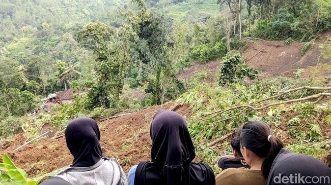
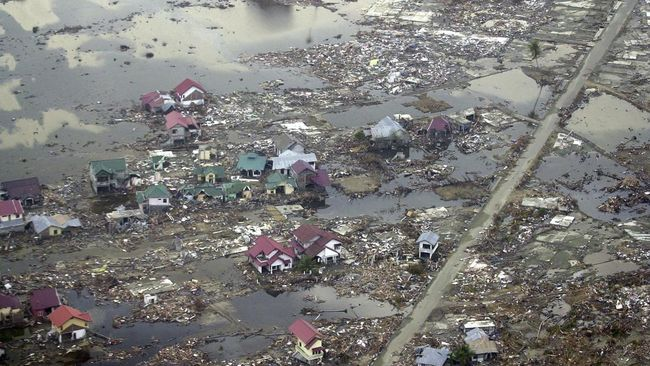
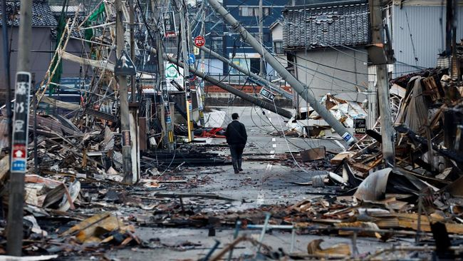

58 Kejadian bencana alam Trenggalek renggut 7 korban jiwa

Badan Penanggulangan Bencana Daerah (BPBD) Trenggalek mencatat 58 peristiwa bencana alam terjadi selama 12 hari terakhir. Tujuh warga dilaporkan meninggal dunia. Dari data Pusat Data Pengendali Operasi (Pusdalops) BPBD Trenggalek, selama periode 14-25 Mei 2025 terjadi 58 kali bencana alam yang tersebar di 78 lokasi di 51 desa/kelurahan. "Bencana alam itu meliputi banjir, tanah longsor dan cuaca ekstrem atau angin kencang. Bencana yang paling dominan adalah banjir dan tanah longsor," kata Kepala Pelaksana BPBD Trenggalek Stefanus Triadi Atmono, Selasa (26/5/2025).
Menurutnya, dari 58 kejadian itu, 34 di antaranya merupakan tanah longsor dan tanah gerak yang terjadi di 51 titik. Selain itu, terdapat 20 titik banjir dan 4 kejadian cuaca ekstrem. "Selama hampir dua pekan ini intensitas curah hujan cukup tinggi. Kondisi tersebut akhirnya memicu terjadinya bencana alam," ujarnya. Ia menyebut, bencana tanah longsor dan tanah gerak terjadi di Kecamatan Bendungan, Munjungan, Panggul, Watulimo, Pule, Tugu, Trenggalek dan Kampak.
Tanah longsor tersebut juga merenggut enam korban jiwa, yakni Mesinem (82), Nitin (36) Tulus (65) Yatini (50) Yatemi (65) Torik (2). Operasi SAR sempat dilakukan oleh tim gabungan dan berhasil menemukan keenam korban dalam kondisi meninggal dunia.
14 Orang Tewas Akibat Badai-Gelombang Panas Terjang Pakistan
Sedikitnya 14 orang tewas akibat badai angin melanda Pakistan Tengah dan Utara setelah gelombang panas hebat terjadi. Peristiwa tersebut juga melukai lebih dari 100 orang lainnya. Dilansir detikNews, provinsi Punjab timur dan barat laut Khyber-Pakhtunkhwa serta ibukota Islamabad pada Sabtu sore dan malam dilanda angin kencang, guntur dan petir. Peristiwa tersebut menyebabkan pepohonan tumbang dan merobohkan tiang-tiang listrik.
Menurutnya, dari 58 kejadian itu, 34 di antaranya merupakan tanah longsor dan tanah gerak yang terjadi di 51 titik. Selain itu, terdapat 20 titik banjir dan 4 kejadian cuaca ekstrem. "Selama hampir dua pekan ini intensitas curah hujan cukup tinggi. Kondisi tersebut akhirnya memicu terjadinya bencana alam," ujarnya. Ia menyebut, bencana tanah longsor dan tanah gerak terjadi di Kecamatan Bendungan, Munjungan, Panggul, Watulimo, Pule, Tugu, Trenggalek dan Kampak.
Tanah longsor tersebut juga merenggut enam korban jiwa, yakni Mesinem (82), Nitin (36) Tulus (65) Yatini (50) Yatemi (65) Torik (2). Operasi SAR sempat dilakukan oleh tim gabungan dan berhasil menemukan keenam korban dalam kondisi meninggal dunia.
Nekat Terobos Banjir, Mobil Hanyut Terbawa Arus di Serpong Semalam
Sebuah mobil MPV hanyut terbawa arus kali di Rawa Buntu, Serpong, Kota Tangerang Selatan (Tangsel). Beruntung, pengemudinya selamat. Kejadian ini viral di media sosial. Dalam rekaman video yang beredar, terlihat mobil hanyut terbawa arus hingga ke kolong sebuah jembatan. Saat terbawa arus, lampu bagian depan dan belakang mobil tampak menyala. Dikonfirmasi, Komandan Pleton BPBD Kota Tangsel Dian Wiryawan membenarkan kejadian tersebut. Dia mengatakan peristiwa mobil terbawa arus tersebut terjadi kemarin, Kamis (29/5) pukul 19.30 WIB.
"Itu (kejadian) semalam, sekitar pukul 19.30 WIB, habis Isya," kata Dian saat dikonfirmasi detikcom, Jumat (30/5/2025). Dian menjelaskan, sebelum kejadian, pihak Camat Serpong bersama lurah sudah memberi imbauan agar tidak ada kendaraan maupun warga yang melintasi jembatan di atas sungai Rawa Buntu tersebut. Tetapi, mobil tersebut tetap mencoba melintas hingga akhirnya hanyut terbawa arus.
"Jadi itu sempat diimbau kepada pengendara, itu kan dekat kali, Pak Camat Serpong melalui lurah-lurahnya sudah mengimbau untuk tidak melintas dulu, diimbau putar arah. Nah salah satu pengendara mobil tetap nekat," jelas Dian. Dia mengatakan kondisi pengemudi dan mobil akhirnya bisa diselamatkan. Dia juga memastikan tidak ada warga atau kendaraan lain yang menjadi korban akibat luapan kali tersebut.
Kesaksian Tsunami 100 Meter Terjang Ambon, Warga Rasakan Kiamat

Seorang tentara VOC George Berhard Rumphius menjadi saksi bencana besar di Indonesia. Fenomena alam ini Ia saksikan usai menginjakkan kaki di Ambon pada tahun 1653. Rumphius berbulan-bulan berlayar dari Portugal. Usai mengitari Selat Magelhaens, terombang-ambing ganasnya Samudera Atlantik, ia tiba di wilayah yang hanya ia kenal dari mulut ke mulut.
Rumphius turun sebagai tentara yang ditugaskan menjaga keamanan Ambon dalam waktu tak ditentukan. Sehari-hari ia mengawasi penduduk dan mendukung proses eksploitasi rempah-rempah oleh VOC. Namun, otoritas VOC melihat Rumphius tak becus kerja. Dia malah sibuk mempelajari alam dan masyarakat Ambon, bukan memanggul dan mengokang senjata. Alhasil, dia pun dipindah ke dinas sipil.
Pemindahan ini disambut baik dan membuat Rumphius mempelajari alam dan kebudayaan. Sampai akhirnya, upaya ini membuat Rumphius tercatat dalam sejarah sains sebagai naturalis ternama. Dia kemudian menuliskan pengamatannya soal alam dalam buku tebal berjudul Herbarium Amboinense. Buku itu tak hanya berisi makhluk hidup, tetapi juga ihwal kesaksiannya soal bencana alam dahsyat di Ambon pada Sabtu, 17 Februari 1674. Hari itu, Rumphius bekerja seperti biasa dari matahari terbit hingga tenggelam.
Warning Gempa Besar Terjang Jepang, 30.000 Orang Tewas

Warga China yang bermukim di Jepang tiba-tiba diminta waspada akan gempa besar yang terjadi di Jepang. Pemerintah negeri tirai bambu itu pun meminta warganya untuk melakukan tindakan pencegahan. Dalam laporan Global Times, Kedutaan Besar China di Jepang mengeluarkan pemberitahuan itu Senin. Ini menyusul rilis pemerintah Jepang 31 Maret soal gempa di Palung Nankai yang bisa membuat 298.000 orang tewas.
"Jepang adalah negara yang rentan terhadap gempa bumi yang sering terjadi. Pada bulan Agustus tahun lalu, gempa bumi berkekuatan 7,1 Skala Richter melanda Prefektur Miyazaki di ujung barat Palung Nankai, yang mendorong pemerintah Jepang untuk mengeluarkan peringatan gempa besar," kata kedutaan dikutip Rabu (16/4/2025). "Menurut laporan media Jepang, pemerintah Jepang merilis penilaian risiko terbaru untuk gempa besar Palung Nankai pada tanggal 31 Maret, yang meningkatkan kemungkinan terjadinya peristiwa seperti itu dalam 30 tahun ke depan dari 70% menjadi 80%," catat kedutaan lagi.
"Gempa bumi yang berpotensi terjadi dapat berdampak pada wilayah yang luas yang membentang dari Okinawa di barat hingga Fukushima di timur, berpotensi menyebabkan 298.000 kematian dan mengakibatkan kerugian ekonomi hingga US$1,8 triliun." Selain mengingatkan warga negaranya, kedutaan China juga memberi tips untuk meningkatkan kewaspadaan dan mempersiapkan diri, memantau informasi terkait gempa bumi dengan saksama dan merencanakan perjalanan, studi, atau pembelian properti di Jepang dengan hati-hati, dengan mempertimbangkan berbagai faktor risiko. Warga China disarankan untuk mengidentifikasi lokasi evakuasi terdekat terlebih dahulu dan mengikuti instruksi evakuasi pemerintah setempat tanpa penundaan.